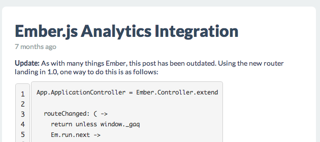

Ember Reader
Building an Ember.js App From Scratch
Created by
Gordon L. Hempton
/
@ghempton
Goals
Real app from scratch
Nested routing
Basic CRUD
The App
Starting Point
Clone
Ember Rails Starter Kit
Pre-styled
First Template
Resources & Routes
Dynamic Data
Ember Data
DS.FixtureAdapter
CRUD
Sub-Resources & Relationships
Sub-Sub-Resources

Polish
Bound Helpers
Edit Form
Thanks!
Some Other Time:
Real backend
Animations
Gordon L. Hempton
/
@ghempton